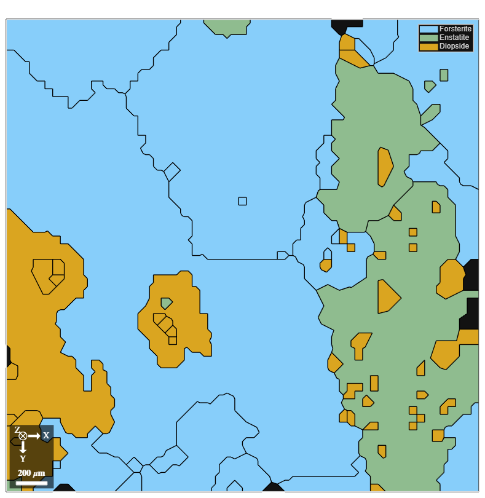
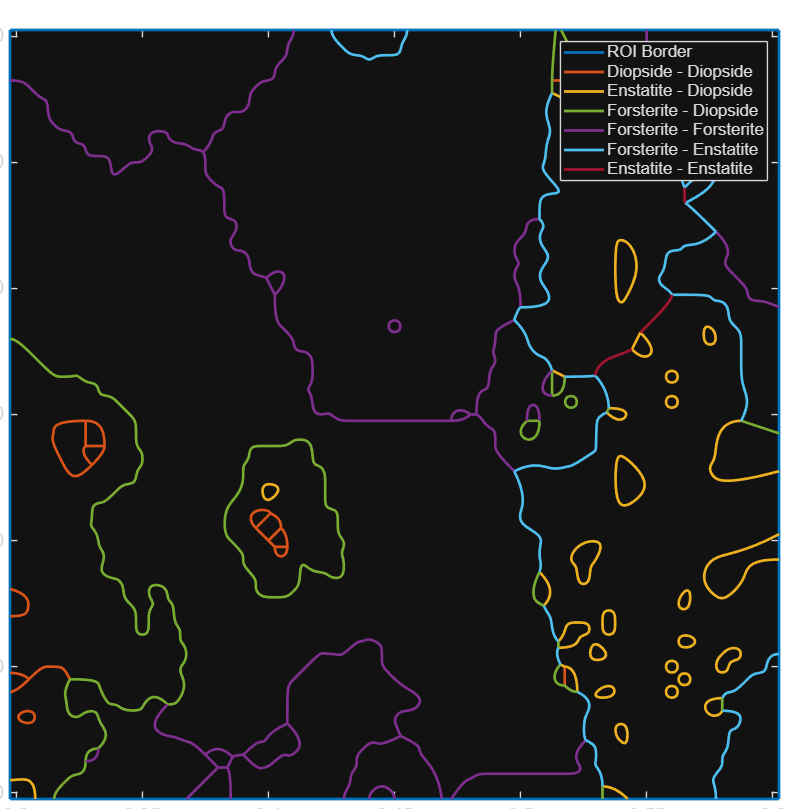

Contents
setMTEXpref('generatingHelpMode',true); % Avoid some artefact (fix issue #5)
MTEX stuff
In this example, EBSD are loaded from the dataset named 'small', provided along with the MTEX toolbox. Once loaded, they can used for reconstructing grains (of class grain2d ).
mtexdata small ebsd = ebsd('indexed'); % Remove unindexed points grains = calcGrains(ebsd); % Compute grains plot(grains)
ebsd = EBSD (y↓→x)
Phase Orientations Mineral Color Symmetry Crystal reference frame
0 1197 (32%) notIndexed none
1 1952 (52%) Forsterite LightSkyBlue mmm
2 290 (7.8%) Enstatite DarkSeaGreen mmm
3 282 (7.6%) Diopside Goldenrod 12/m1 X||a*, Y||b, Z||c
Properties: bands, bc, bs, error, mad, oldId
Scan unit : um
X × Y × Z : [33000 → 36000] × [4500 → 7500] × [0 → 0]
Normal vector: (0,0,1)

Compute the meshable geometry and plot it
The command below converts the grain geometries into a Gmsh-like description of the domains:
G = gmshGeo(grains);
The variable G is an object of class gmshGeo . It fully describes the geometries of all grains and their intrisic properties.
Plot the geometry
One can easily plot the geometry using the usual plot function.
plot(G);
legend show

Mesh the geometry
mesh(G,'small.inp');
This command runs Gmsh within Matlab and exports the mesh into the specified format (Abaqus INP here). Extensive tweaks are available for meshing, as detailed in the corresponding section .
Export the grain properties
In order to retrieve the grain properties when importing the mesh into the FEM code (for assigning materials and orientations), one can export the properties of each grain as Comma-separated values (CSV).
exportGrainProps(G, 'small.csv');